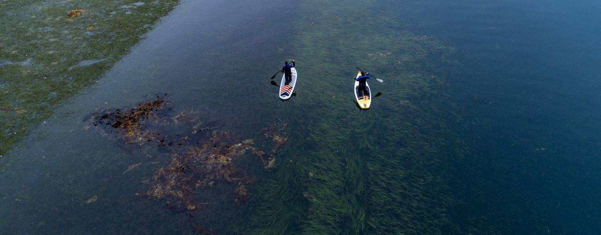

Research
GeoFly Lab applies GIS, remote sensing, and UAV mapping to environmental and urban questions, from wildfire and coastal ecosystems to urban heat.

Wildfire Remote Sensing
Funded by NASA through the FireSage program
We use thermal, LiDAR, and multispectral drones to study fire behavior during prescribed burns, working with CAL FIRE and the Wildfire Interdisciplinary Research Center. The work includes real-time thermal mapping of active fire, AI detection of fire fronts through smoke, fuel mapping before and after burns, and assessment of the Home Ignition Zone in fire-prone communities.
Projects: Prescribed fire mapping; Home Ignition Zone (HIZ); NASA FireSage student program

Coastal Seagrass Mapping
Funded by the National Science Foundation (NSF Build and Broaden, B2)
A collaboration mapping eelgrass (Zostera marina) meadows from Alaska to Southern California. We combine low-altitude UAV imagery, field ecology, and AI to measure seagrass extent, condition, and wasting disease across roughly 18° of latitude.
Projects: Pacific coast eelgrass surveys; wasting-disease monitoring; Florida Indian River Lagoon mapping

Urban-Environmental Data Science
Spatial statistics, machine learning, and thermal remote sensing applied to urban heat, transportation, and public safety, including the spatio-temporal cokriging (ST-Cokriging) method for fusing multi-sensor remote sensing data.
Projects: Urban heat and transportation; crime prediction; ST-Cokriging image fusion; hydrological BMP analysis; cultural heritage mapping

Geospatial Education
Open-access drone mapping training, K-12 outreach through summer programs and research experiences for teachers, and the student-led GIS and Drone Society.
Projects: Open-access drone mapping course; K-12 summer camp; NSF Research Experience for Teachers; GIS and Drone Society
Photos from our fieldwork are collected in the photo gallery.